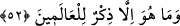

kişi, başkasından kendine öğüt çıkaran ve her şeyden bir işâret almasını bilendir.
Allah’tan bizlere tam bir basîret nasîb ve ihsân etmesini diliyoruz.
Kâfirler, Peygamberimiz (s.a.)’in durumuna şaşkınlıklarının zirvesinde; Kur’an’ın
eşsiz ilmi güzelliklerini bilmeyişin doruğunda olduklarından ve insanları Kur’an’dan
uzaklaştırmak istediklerinden dolayı “hâlâ da hiç şüphe yok o” Peygamber (s.a.) “bir
delidir derler.” Onlar -yukarda ifâde ettiğimiz gibi şaşkınlık ve cehâlet içinde
olmasalar- Peygamber Efendimiz’in, insanların en akıllısı olduğunu bilirlerdi.
Onların bu sözleri, “Dediler ki: Ey kendisine Kur’an indirilen (Muhammed)! Sen
mutlaka bir mecnûnsun” (el-Hicr, 15/6) sözlerine benzemektedir. Nitekim Velid b.
Muğire Peygamber (s.a.) için “o, kendisine bâzı şeyler öğretilmiş deli” der, bu sözüyle,
“Ona cinlerden birisi geliyor ve bunları ona o cin öğretiyor” demek isterdi. Aslında
onların bu aslı esası olmayan hükümlerinin kaynağı, Hz. Peygamber (s.a.)’den işittikleri
sözlerdi.
Şimdi, onların bu iddiâları ve yargıları, Peygamber Efendimiz’in şânının yüceliği ve
burhanının açıklığı bildirilerek reddediliyor ve şöyle buyruluyor:
52. Oysa o (Kur’an), âlemler için ancak bir öğüttür.
Arapça dilbilgisi kurallarına göre bu son âyet, bir önceki âyette geçen “yekulûn:
derler” fiilinden hâl olmaktadır. Bu cümle, onların sözlerinin son derece geçersiz
olduğunu ifâde ile böylesine ağır bir sözü ağızlarına alabilme cesâretlerinden dolayı
işitenleri hayrete düşürmeyi amaçlamaktadır. Bir başka ifâdeyle burada şöyle
denmektedir: Hâlâ inadla “hiç şüphe yok o bir delidir” derler. Oysa onun getirdiği
Kur’an, gerek insan, gerek cin bütün âlemlere gönderilmiş bir öğüttür, bir uyarıdır.
Herkese dinlerine dâir muhtaç oldukları hususları beyân eden bir kitaptır. Şu hâlde
kendisine böylesine bir kitap indirilen Hz. Muhammed (s.a.) nerede, onun hakkında ileri
sürülen “deli olduğu” iddiâsı nerede? Oysa Hz. Peygamber (s.a.), Kur’an’ın bütün
sırlarını bilmekte ve içinde yer alan tüm gerçeklerden haberdar bulunmaktadır. Bir
başka ifâdeyle Kur’an, onun aklının mükemmelliğine ve şânının yüceliğine delâlet eden
delillerin ilkidir. Ona eksiklik isnâd eden kişinin bu iddiâsı, kendisinin câhillik ve
deliliğinden kaynaklanmaktadır. Çünkü “fazîleti ancak erbabı bilir” diye bir söz vardır.
Nitekim şâirin şu beyti de aynı mânâyı yansıtmaktadır:
Göz değilse sağlam, olursa ama,
Der: “Sabah oldu mu?” Şaşma buna!
“Öğüttür” şeklinde tercüme edilen “zikir” kelimesinden maksad bâzı âlimlere göre